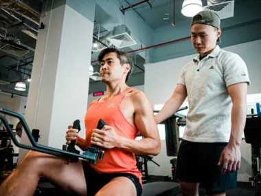
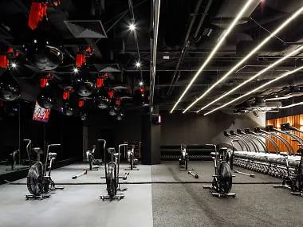

Atlas FitnessAt independently owned Atlas Fitness in Bukit Timah, the coaches understand that not everyone feels 100 percent comfortable in their own skin – much less, at a gym with cutting-edge equipment and fit gym-goers. After all, there’s a whole lot of anxiety when it comes to joining a gym or working out with others. But with their friendly and experienced coaches, judgement-free space, and bespoke personal training programmes that are specially tailored for you, you won’t feel any gym anxiety one bit. |
 |
Evolve MMAFor anyone with an interest in martial arts, this MMA gym needs no introduction. Evolve’s lineup of world champions – who are both instructors and practitioners – is legendary. Think local darling Angela Lee and most decorated Muay Thai world champion Petchboonchu FA Group who has 14 titles under his belt. Besides Muay Thai, there’s a whole range of different martial arts classes too like Brazilian Jiu-Jitsu (BJJ) and Mixed Martial Arts (MMA). The gym also has modern, state-of-the-art equipment such as airdyne bikes, rowing machines, treadmills, and free weights for you to squeeze some strength and cardio training in between classes. |
 |
Pure FitnessThis 32,000-square-feet club in Marina Bay has three other sister studios in Orchard Road, Raffles Place, and Suntec City offering equally powerful group classes every week. The gym is split into various zones to cater to different training needs. Train like an athlete at the dedicated athlete area fitted with a four-lane, 35-metre indoor running track. Or get strong with kettlebells and medicine balls at the strength and condition corner. There's even a competition Octagon MMA zone for budding and serious boxers, kickboxers and grapplers. |
 |
| Date | Time | Duration | Fees |
|---|---|---|---|
| Monday | 5:15-6:00pm | 45mins | 10$ |
| Tuesday | 5:00-6:00pm | 60mins | 15$ |
| Wednesday | 4:15-5:00pm | 45mins | 10$ |
| Friday | 6:15-7:15pm | 60mins | 15$ |
| Sunday | 9:00-12:00am | 180mins | 20$ |